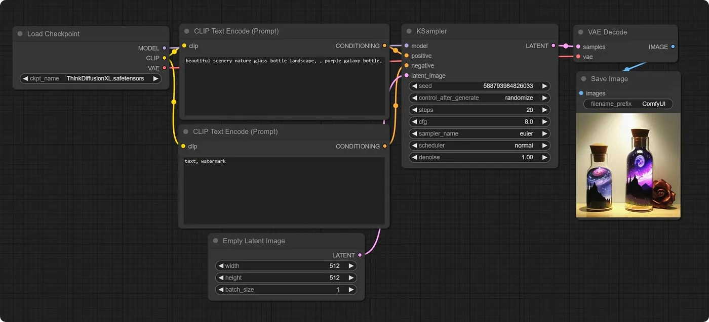
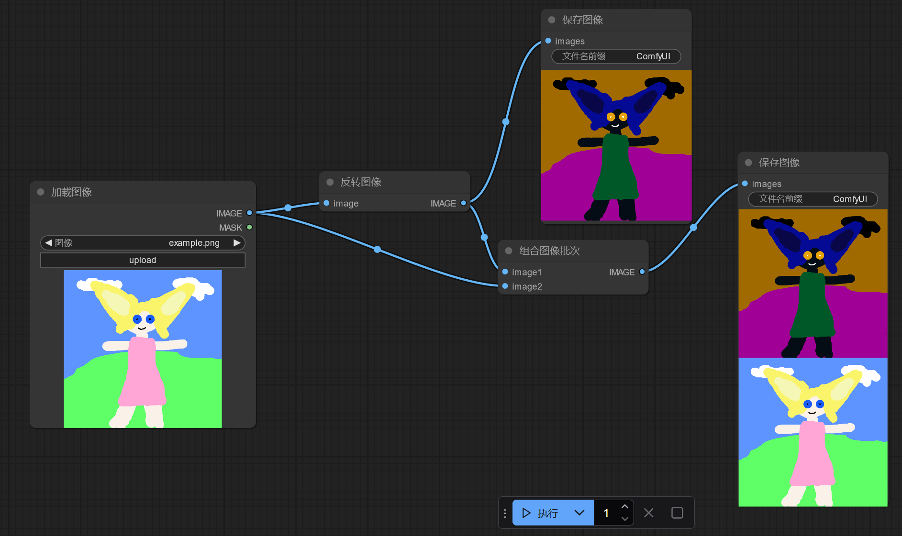

ComfyUI 学习 01——SD 基础，部署
没有学线代的需求了，转过头来学深度学习，这里正好也去学习 ComfyUI，看能不能帮助我进行线稿上色，方便我学习绘画。
这里先讨论一下我之前为何去学习 Stable Diffusion，又为何放弃。之前学 SD 是想着能不能作参考，以及拿喜欢的画师进行训练，提供更多素材，但我学习的时候跟的教程它是循序渐进地教的，没有很快地看到我想要的东西（ControlNet 还在很后面），也就是说，缺乏针对性，最终也导致我放弃了。
这次学的话目的就要明确——文生图，图生图瞥一眼就好，直奔 ControlNet。找教程时略过生成图像的部分，而且看能不能直接找针对画师的教程。同时针对概念的学习浅尝辄止，更多地使用 XYZ 脚本去得到各种参数的“感觉”。
学习时，专注我的几个痛点：
- 线稿上色，帮助我学习光影、氛围、色彩等内容
- 图像完善，将已完成的作品喂给它让它做调整，来看我的画面有何不足（Vector 老师的文章里提过的做法，他把默写头像喂给 AI 让它细化，从而观察自己的不足）
以及，这里直接上 ComfyUI，因为它的可定制性，而且和 Krita 的集成性，我希望线稿上色能成为一个自动化的流程，我一键就能给我的画生成多种风格的上色，这个 WebUI 似乎是做不到的或者相对麻烦。ComfyUI 使用工作流的形式去编辑，对程序员是友好的，我就不该去学 WebUI，直接上 ComfyUI 的，甚至可以直接在 krita 中使用。
这里首先概览 SD 的相关概念，以及部署 ComfyUI。
Stable Diffusion 是什么
Stable Diffusion（后面简称 SD）是一种深度学习模型，用来图像生成等。Stability AI 训练并发布 SD 模型，然后大家使用这个模型去做推理和微调（fine-tuning，即我们说的自己用图像去做训练，去模仿某画师风格之类的）。微调需要大量的数据集，通常使用 Lora 更直接一些。
我们从网上下载的 SD 模型，全部都是从原始的 SD 模型做微调得来的。
WebUI、ComfyUI、diffusers（后面均称为前端）提供界面或 python 接口去让用户能方便使用 SD 模型，它本质上只是一个 interface，只是使用现有的 SD 模型，接受用户的输入去做推理。
SD 有所谓的插件，去提供更多功能，插件不改变 SD 模型的内容，只是调整对 SD 模型的使用方式。由于 SD 并非是一个具体的 python 库之类的东西，因此插件开发也没有一个具体的规范，因此插件均是特定前端的插件，没有通用的插件。
SD 模型有不同的版本，前端可能只支持特定版本的 SD 模型；插件也有不同版本，插件可能只支持特定版本的前端，但对 SD 模型的版本似乎不挑。
Checkpoint
SD 模型称为 Checkpoint。在它刚开始训练和训练完成后，它的“形状”是没有变化的，变化的只有其内部的权重，因此我们使用的大模型，总是某个检查点下的大模型，所以这里就直接叫它 Checkpoint；以此类推，微调后的大模型也叫 Checkpoint。
大模型主要可以分为真实，二次元和 2.5D（厚涂之类的）。
大模型分为 普通 / SD 模型和 SDXL 模型；常说的 SD1.5/2.0/2.1 等是 SD 模型，普通模型的基础分辨率是512x512，生图时务必用模型本身的基础分辨率去出图，再在该分辨率的基础上做放大操作，但可以做细微调整，如使用768x512出宽屏图等；SDXL 模型基础分辨率是1024x1024，因此会占用更多显存（起码得 16G），体积也更大——普通模型大小大概是 2-3G，SDXL 模型在此基础上翻倍。SDXL 兼容性一般也没有 SD 模型好。
Lora
Lora 必须依附在大模型上使用，做微调，来自于对特定风格图片的训练，体积小，但能提高对特定风格/主题图像的生成效果。Lora 也分为普通 Lora 和 SDXL Lora。我可能会很常用到 Lora，Lora 能够用来指定生成图像的风格，如水墨，水彩，黑白漫画等。
ControlNet
ControlNet 是一种技术（以插件的形式），允许用户提供更多的输入，如人体姿态图，线稿，深度图等，使得能更精确地约束和控制生成的图像，避免出现错误的人体结构，多几根手指等情况，同时保证创作一致性，比如生成同一个角色的多个角度的图像等。
ComfyUI 是什么
ComfyUI 是一个创建和运行生成内容的工作流 Workflow 的环境。这里的工作流指的不是那种 BPMN 规范的工作流，而是一系列节点的集合，这些节点互相连接形成一个图，更具体的说，是有向无环图 DAG。下面是一个基础生图的工作流，注意到它的形式和 Blender 的渲染节点，几何节点很相近。

从 ComfyUI 看 WebUI，WebUI 实际上也可以认为是一个相对固定的工作流（CLIP，KSampler，Hires.fix 等一系列工作），用户能做的基本只有调整参数，无法做流程上的修改（并非不行，但那也是基于框架实现者的硬编码），比如 WebUI 无论如何都不能把反向提示词给它干掉，而 ComfyUI 则支持任意调整的能力，更别提 ComfyUI 支持自定义节点，这让它和其他应用程序如 Krita 的集成成为可能。
这里神奇的是，即使是模型的训练也可以使用工作流来表示。
ComfyUI 的工作流相当于是一种可视化编程——每个节点可以认为是一个类的实例或有状态的函数，能够得到输入，也能够输出进行，能够在界面中调整它内部的状态；而节点之间的连接则是将不同节点的输入-输出相连接。这能够带给它按钮、菜单绝对带不来的功能优势。
以及，这里的输入、输出是强类型的，类型不匹配会导致报错，这给 debug 带来了方便。
但注意到这里其实也不能直接称为编程——没有结构化语句，没有循环，一个节点的逻辑执行完后，它的状态就不会再改变，无法再度执行了。要实现可编程能力，我们需要使用列表去模拟循环，对于多重循环，需要做出它们的笛卡尔积。实际上，ComfyUI 的很多节点的输入既支持标量也支持向量，如下面同时输出图像和反转图像。

这个示例同时也启示我们可以拿 ComfyUI 干生成图像以外的事，比如图像批处理等，不也挺有意思？
利用这一特性，我们如何实现同时输出不同参数的结果呢？构造相应的列表，直接给它传过去。但这里的具体行为应该是取决于节点的，节点自己决定接不接受向量，以及接受向量时做什么处理。
一个方便的点是，节点的属性是可以转化为输入的，反之亦然，同时节点的属性允许在运行时被改变，这允许诸如 K 采样器的节点每次执行后修改种子。
使用 ComfyUI 主要就是编辑和使用工作流，工作流就是 ComfyUI 的项目或 scene。
每次执行 ComfyUI 的工作流时，会把当前工作流的所有内容传给后端，后端把工作流内容称为 prompt（实际上后端就叫 PromptServer，为何取这个名字……），使用一个 id 去标识 prompt，这个 prompt 会进入一个队列，前端轮询等待执行完毕。前端配置批次数量为几，就会产生多少个 prompt。这里具体细节等研究自定义节点的时候再说。
ComfyUI 这种工作流系统相较于 webUI，虽然会引入更多概念（比如 CLIP 模型，在 WebUI 中我完全没有意识到它的存在），学习成本更高，但让人对 SD 的工作原理更加了解，而非是像 WebUI 那种纯黑箱；以及 ComfyUI 的 ControlNet 等插件是通过自定义节点的形式去引入的，能够更加清晰地看到这些插件会对哪些部分有影响。更别提这种工作流也方便实现 XYZ 脚本比较，这个必须要重点研究，自己做的比较，比干巴巴的描述强多了，像深度学习这种炼丹的玩意儿，能做比较太重要了。
部署 ComfyUI
ComfyUI 部署很容易——它对 Windows 直接提供了一个自带 Python 环境和 torch 等依赖的压缩包，不需要任何配置，解压即用。
下载直接在 Github 的 releases 上，https://github.com/comfyanonymous/ComfyUI/releases，如果慢可以用 https://ghproxy.net/ 加速。
下载后解压，进入解压的目录，执行脚本run_nvidia_gpu.bat即可。可以使用 ./python_embeded/python.exe -s ComfyUI/main.py --help 查看可用的参数。
安装 ComfyUI Manager 是有益的，能够帮助我们下载插件和模型。进入ComfyUI/custom_nodes，执行git clone https://github.com/ltdrdata/ComfyUI-Manager.git，重启 ComfyUI 即可。
配置国内源
主要是 huggingface 的镜像，配置下面的环境变量（可以直接写到系统环境变量中，这个绝对通用）：
1 | |
TODO 是否需要配置 github 的镜像？
本博客所有文章除特别声明外，均采用 CC BY-NC-SA 4.0 协议 ，转载请注明出处！